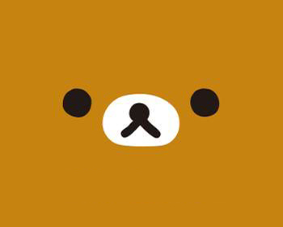
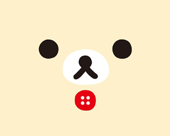
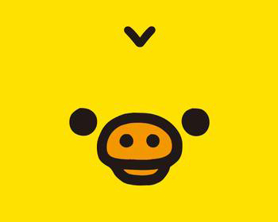

-

❤熊哥哥❤
轻松熊英文名Rilakkuma是由英文Relax（解：松弛）和日文Kuma（解：小熊）组合而成的，即是松弛熊，也翻译作轻松熊。一天下午，当作者近藤亚希小姐如常完成她的日常家务时，清洁洗衣等等……她突然感到很厌倦，当她躺在沙发上休息的时候，电视正在播映着动画节目”宠物小狗”突然吸引着她的视线；一只可爱美丽的小狗享受着美食，旁边有软绵绵的睡床，身穿着华丽迷人的衣服。多么休闲的生活啊！
-

❤熊妹妹❤
经常在轻松熊身边的白色小熊，名字叫做コリラックマ，比轻松熊熊多了一个片假名「コ（ko）」，这个片假名在日文里有「小孩子」的意思；就是说，白色小熊是小孩懒懒熊。我们喜欢叫它熊妹妹，熊妹妹因为年纪小，很喜欢玩，有些时候和小黄鸡一起弄恶作剧恶搞轻松熊。
-

❤黄小鸡❤
黄色的小鸡，最特别的是它那两个猪一样的鼻孔。它的名字是「キイロイトリ」 キイロイ：「黄色」的意思。トリ：鸟、鸡的意思。罗马拼音：Kiiroitori。一只黄色的小鸡，名叫キイロイトリ，经常发出叽咕的声音，它的最大特点就是有两个猪一样的鼻孔，所以它也有另一个昵称----鼻孔鸡。小黄鸡最爱干净，它经常打扫卫生。有些人也喜欢叫胖子鸡